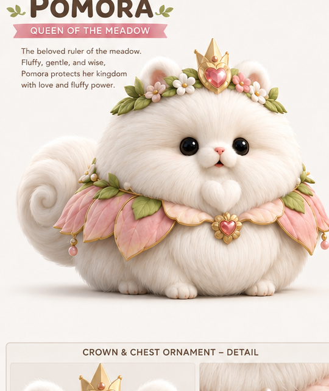

MEADOW LINK // READY
BLOSSOM BREACH
악몽 포자가 번진 꽃의 왕국을 조준 링크로 정화하세요.
포모라 여왕의 마지막 정화 사수로서 날아드는 포자 군집을 막고, 왕국의 꽃심장을 되살려야 합니다.
총 콘솔은 BLE HID 마우스로 연결
총을 움직여 조준점 이동 · 방아쇠로 발사

MEADOW SIGNAL // POMORA
꽃길 기록을 불러오지 못했습니다
정화 작전을 바로 시작합니다…MEADOW LINKED
SCORE000000
CHAIN×1
PURITY
TIME60.0
NIGHTMARE SPORE